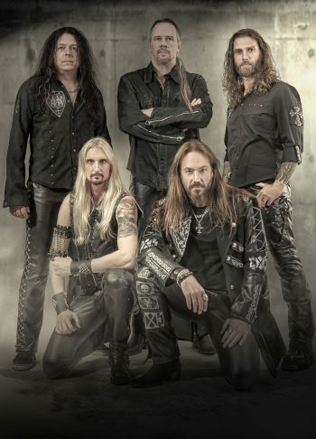

|

HammerFall — метал-группа из Швеции, играющая хэви-пауэр-метал.
История:
В 1993 году гитарист Оскар Дроньяк и бас-гитарист Еспер Стрёмблад покинули группу Ceremonial Oath. Стрёмблад занялся подбором коллектива для своего сайд-проекта In Flames, а Дроньяк организовал HammerFall. Они помогали друг другу — Стрёмблад занял место за ударными HammerFall, а Дроньяк исполнял бэк-вокальные партии на ряде песен In Flames. К этому времени Дроньяк уже сочинил песню «Steel Meets Steel», которая позже вошла в их дебютный альбом. Вскоре к ним присоединились гитарист Никлас Сундин, басист Йоханн Ларсон и вокалист Микаэль Станне (из группы Dark Tranquillity).
На следующий год Сундина и Ларссона сменили Глен Люнгстрём (из группы In Flames) и Фредрик Ларссон (басист распавшийся шведской дэт-метал-группы Dispatched). Таким образом, состав группы был в основном набран из бывших и даже действующих музыкантов In Flames, и музыкальные обозреватели изначально рассматривали HammerFall как их сайд-проект.
В 1996 году группа приняла участие в конкурсе Rockslaget с песней Judas Priest «Breaking the Law». После четвертьфинала Станне не смог продолжить выступление и в полуфинале его сменил Йоаким Канс, за что группа и была дисквалифицирована, но Йоаким был приглашен в основной состав группы и стал одним из лидеров и основных композиторов HammerFall.
В 1997 году на лейбле Nuclear Blast вышел дебютный альбом группы, «Glory to the Brave», который имел значительный успех в Скандинавии и был назван «Альбомом месяца» сразу тремя музыкальными изданиями. HammerFall приняли участие в фестивале Wacken вместе с Gamma Ray и Lake of Tears. В то же время к группе присоединился новый гитарист Стефан Эльмгрен. В конце года группа получила шведскую премию Грэмми. После релиза в 1998 году альбома «Legacy of Kings» шведы отправились в мировой тур в его поддержку вместе со Stratovarius и Lordi. Часть песен на первых двух альбомах была написана Стрёмбладом, который вскоре покинул группу, сосредоточившись на карьере в In Flames, и параллельно основал Sinergy.
HammerFall записали ряд кавер-версий песен Helloween, собираясь выпустить трибьют-альбом. Однако лейбл Nuclear Blast отказался издавать подобный эксперимент, ограничившись синглом «I Want Out», записанным дуэтом с основателем Helloween и лидером Gamma Ray Каем Хансеном.
Альбом 2000 года «Renegade» достиг первой отметки по рейтингам продаж в Швеции. В поддержку альбома группа провела ещё один тур и выпустила DVD «The Templar Renegade Crusades», записанный в декорациях развалин замка. Следующий релиз, Crimson Thunder, выпущенный в 2002, стал шагом к переменам: группа от быстрого и мелодичного пауэр-метала стала постепенно склоняться к классическому средне-темповому хэви-металу с «галоповым» риффом.
Тур в поддержку альбома был сорван в результате опасного инцидента. Йоакима, сидевшего со своей подругой в баре, некий хулиган ударил в лицо стеклянной кружкой. Как позже выяснилось, это был фанатик блэк-метала, ненавидевший HammerFall за «неправильную» музыку. Врачи с трудом спасли вокалисту глаз, проведя пластическую операцию. Как только стало возможным, Йоаким присоединился к группе и принял участие в совместном туре с Дио. Тур был успешным, однако менеджер группы скрылся, похитив значительную часть выручки.
В последние годы группа также выпустила альбом «Chapter V: Unbent, Unbowed, Unbroken», где присутствовал дуэт с гроулинг-вокалистом группы Venom. Песня «Blood Bound» и видеоклип на неё имели большой успех в европейских хит-парадах. За ним был выпущен альбом «Threshold», на котором группа ещё больше склонилась в сторону хэви-метала. Перед записью альбома Йоаким, испытывавший проблемы с голосом, перенёс операцию на связках. По его словам, она вернула ему целую октаву голосового диапазона.
Группа часто выступала в поддержку олимпийской сборной Швеции, в частности по кёрлингу (ставшей победителем Олимпийских игр-2006), и сняла два клипа с участием известных спортсменов. Также песня «Hearts on Fire» является гимном олимпийской сборной Швеции.
В конце 2006 года, после успеха их друзей и частых партнёров по турам Lordi на конкурсе песни «Евровидение», в прессе и на интернет-сайтах, посвящённых музыке распространялась информация, что жюри конкурса пригласило Hammerfall и Europe к отбору на Евровидение-2007 от Швеции. Однако Йоаким Канс в интервью публично заявил, что HammerFall не заинтересованы участием в конкурсе[4].
В 2007 году по неизвестным причинам из группы уходит басист Магнус Розен. Концертная деятельность группы была временно приостановлена в связи с поисками нового бас-гитариста. Эту позицию занял вернувшийся в группу Фредерик Ларссон. Годом позже Стефан Эльмгрен приостановил участие в группе, так как начал карьеру лётчика. Его место занял Понтус Норгрен. Новый состав выпустил трибьют-альбом «Masterpieces», состоящий из кавер-версий песен известных хэви- и пауэр-метал групп.
В 2009 году Hammerfall выпускает альбом «No Sacrifice, No Victory».
Стилистика:
С самого начала группа избрала имидж и тематику средневековых рыцарей-храмовников. Большинство песен группы так или иначе посвящено сражениям, походам, боевым гимнам и борьбе за справедливость, а сценический имидж группы включает в себя кожаные «доспехи». Тематика песен HammerFall близка к воинственной эстетике Manowar, с тем существенным отличием, что в отличие от своих американских коллег, шведы делают основной упор не на упоении битвой и мощью, а на возмездии и рыцарской чести.
Талисман группы — храмовник Гектор (англ. Hector the Templar), присутствующий на всех обложках альбомов и синглов. Изначально нарисованный Андреасом Маршаллом, сейчас он в основном известен по рисункам Сэмвайса Дидье, художественного редактора компании Blizzard (что заставило некоторых поклонников ассоциировать группу с игрой Warcraft, чей дизайн был создан Сэмвайсом, а Гектора — с паладином из этой игры). Гектор фигурирует в некоторых видеоклипах группы, в частности Renegade и Natural High.
|